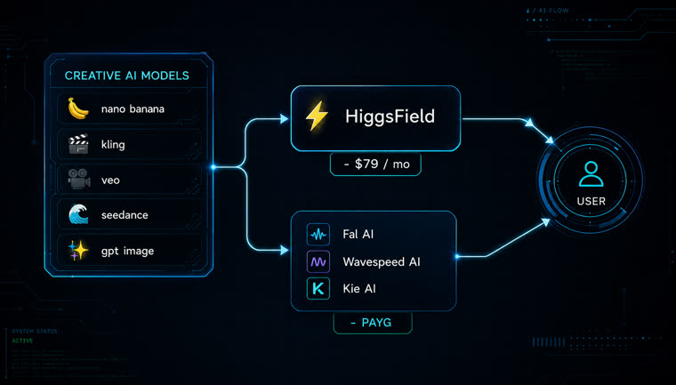

Roteamento por custo, aprovação antes de gastar, livro-caixa e o prompt guardado ao lado de cada arquivo.
Skill é uma pasta de arquivos Markdown que funciona como manual operacional: o agente relê a cada uso, então as regras escritas uma vez passam a valer sempre. Esta cobre imagem e vídeo — e, principalmente, o que costuma dar errado em volta deles.
Escolhe a rota mais barata que dá conta da tarefa e diz qual usou. Preço mora num arquivo com data, não no palpite do agente.
Cota em dólar e espera o "pode". Uma aprovação vale uma execução. Teto mensal acumulado, porque portão por execução deixa passar trinta gastos pequenos.
Biblioteca plana, um JSON ao lado de cada arquivo com prompt, modelo, parâmetros e custo. Três meses depois ainda dá para saber o que fez aquela imagem.
O fluxo não muda entre as duas versões. O que muda é para onde o passo 1 aponta.
Escolhe o modelo e o provedor, e lê a receita daquele modelo antes de chamar — endpoint, autenticação, formato do corpo, onde o arquivo aparece na resposta.
Logotipo, rosto e estilo vêm de arquivos em refs/. Descrever um logo em palavras devolve logo errado toda vez — se o arquivo não existe, a skill para e pede.
Modelo de vídeo devolve um id de job; a skill consulta o status e baixa na hora, porque URL de resultado expira em horas. O id fica salvo para retomar sem pagar de novo.
Sem subpastas. Parece bagunça e é o contrário: qualquer galeria, script ou busca lê a biblioteca inteira sem configuração.
JSON de mesmo nome-base ao lado do arquivo, mais uma linha no livro-caixa. O lançamento acontece quando o provedor aceita o job — não quando o arquivo chega.
Modelo novo é uma receita Markdown de dez minutos. Nada mais muda — é o que faz o sistema sobreviver à troca mensal de modelos.
Numa máquina com modelo rodando nela, a rota mais barata é gratuita e o portão de custo quase nunca dispara. Sem isso, toda geração custa — e o portão vira o coração da skill.
| generate-local | generate-api | |
|---|---|---|
| Para | máquina com modelo rodando nela | qualquer máquina, tudo via API |
| Rota mais barata | local, $0 (flux2-klein na GPU) | modelo barato pago, ~$0,02 |
| Modelo de cobrança | hardware já pago, custo marginal zero | pay-as-you-go por chamada |
| Rota paga | exceção — duas razões só | é o único caminho |
| Imagem com texto legível | rota paga (modelo local erra letra) | modelo top, pago |
| Vídeo padrão | render 2.5D local, $0 | generativo, $0,20–0,35/s |
| Portão de custo | existe, quase nunca dispara | dispara em toda execução |
| Rascunhar barato / finalizar caro | sem sentido — é o mesmo modelo | é a regra que mais economiza |
| Depende de | servidor de imagem local no ar | FAL_KEY + KIE_API_KEY num .env |
Escolha uma das duas versões por workspace — as duas declaram name: generate.
Os scripts usam só biblioteca padrão. Sem dependências para instalar.
# confira python3 --version
A skill checa a saúde antes de gerar e, se estiver fora, falha dizendo como subir — em vez de cair para uma rota paga em silêncio.
# deve responder status ok curl localhost:8000/health
Agregadores dão dezenas de modelos com uma chave e uma fatura só. Adicione .env ao .gitignore no primeiro dia.
# .env FAL_KEY=sua_chave KIE_API_KEY=sua_chave
Comandos reais. A versão local gera de graça; a versão API nunca chama a API sem uma aprovação explícita no comando.
As duas versões vivem em pastas separadas, com um README cada uma.
git clone https://github.com/inematds/generator-skill cd generator-skill
Uma por workspace. Se instalar as duas com o mesmo nome, elas colidem.
# máquina com modelo local rodando cp -r generate-local ~/.claude/skills/generate # máquina sem modelo local — tudo por API paga cp -r generate-api <workspace>/.claude/skills/generate
Escolha a pasta da biblioteca e o teto mensal de aviso. Dica de limite: carregue pouco crédito no primeiro pagamento — o provedor não gasta o que não tem.
# _config.json, criado na primeira execução { "pasta": "~/generations", "teto_mensal_usd": 50 }
Custo zero, poucos segundos. Sem custo marginal, rascunho e final são o mesmo modelo: varie a semente à vontade.
python3 scripts/gerar-local.py \ --prompt "capa de curso, formas geométricas, fundo escuro" \ --projeto capa-curso --desc hero -n 3 # OK ...capa-curso_hero_1785563764.png (6.2s, $0)
--estimar imprime a cotação e sai sem gastar. É o que se mostra à pessoa antes de pedir o "pode".
python3 scripts/gerar.py --rota fal --model <id> \ --prompt "..." --projeto capa --desc hero \ --custo 0.04 --estimar # COTACAO custo $0.04 · mês $0.00 de $50 -> ficaria $0.04 # Nada foi gasto.
Sem --confirmar o script se recusa a chamar a API. A autorização fica no comando, não na memória de quem conduz.
python3 scripts/gerar.py ... --confirmar # vídeo assíncrono: submete, faz poll, baixa e guarda o task id python3 scripts/gerar.py ... --custo 1.75 --async --confirmar
O lançamento acontece quando o provedor aceita o job. Se a geração falhar depois disso, o dinheiro já saiu — e aparece marcado como pendente, em vez de sumir.
python3 scripts/registrar.py --saldo # 2 run(s) cobrados sem arquivo salvo: # ...1f5462ee incompleto $0.40 # ...fb8bb889 falhou $2.00 task T3 # quando a fatura chegar, corrija o valor python3 scripts/registrar.py --corrigir <run_id> --cost 1.9
Copie o template de receita, preencha com a documentação do provedor e some a linha na tabela de preços com a data. Dez minutos, e nada mais muda.
cp models/_template.md models/meu-modelo.md # preencha: model id, método (sync/async), endpoint, auth, # corpo do request e onde o arquivo aparece na resposta
O fluxo completo e a decisão de rota que está por trás da separação em duas versões.

O que foi verificado por execução real está marcado como tal; o resto está marcado como não verificado dentro das próprias receitas.